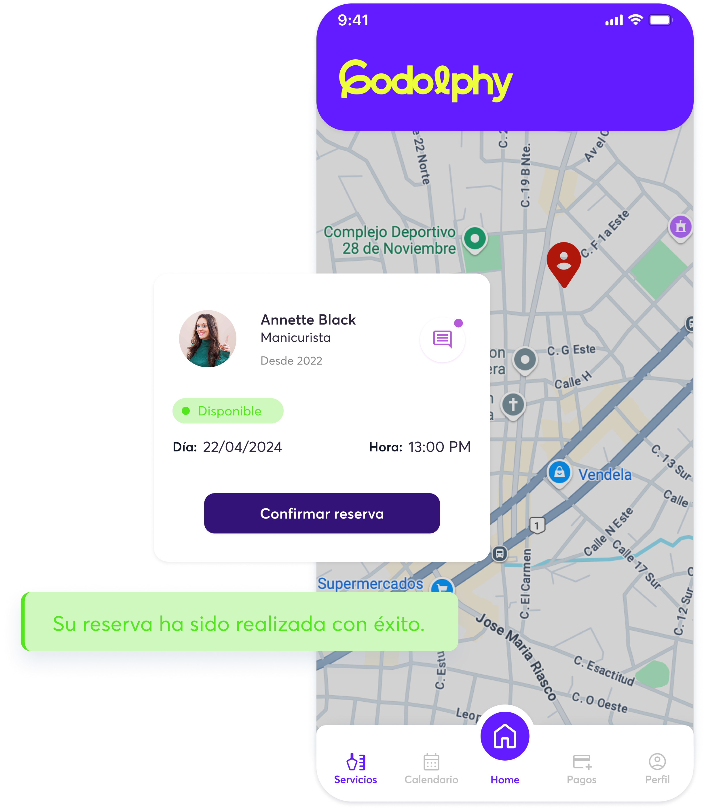
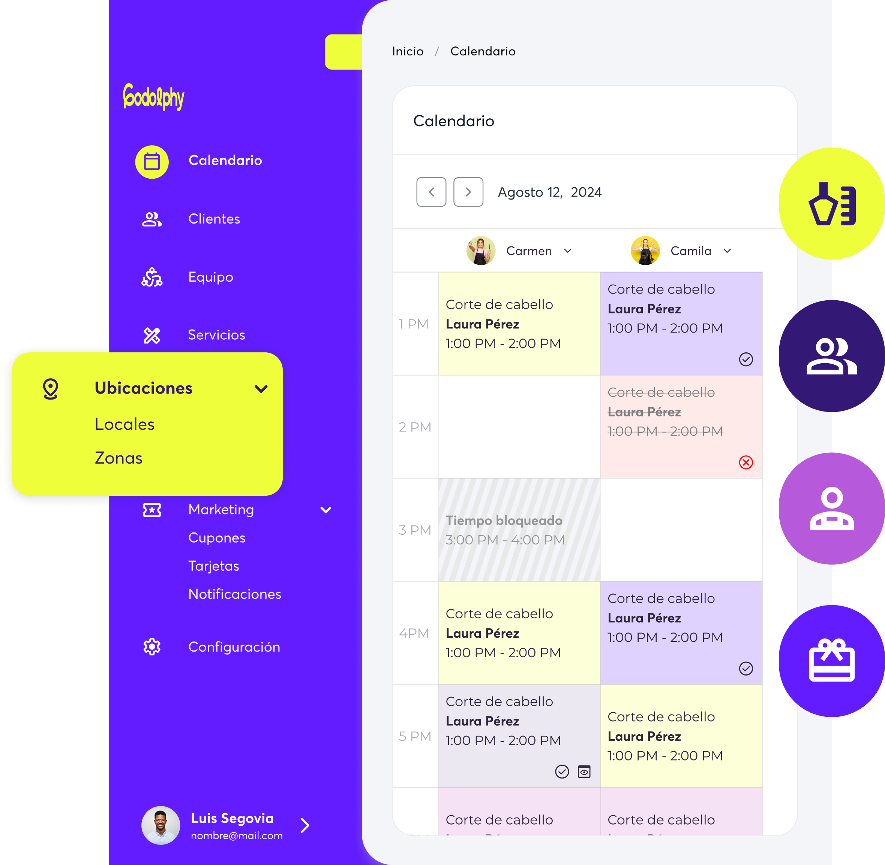
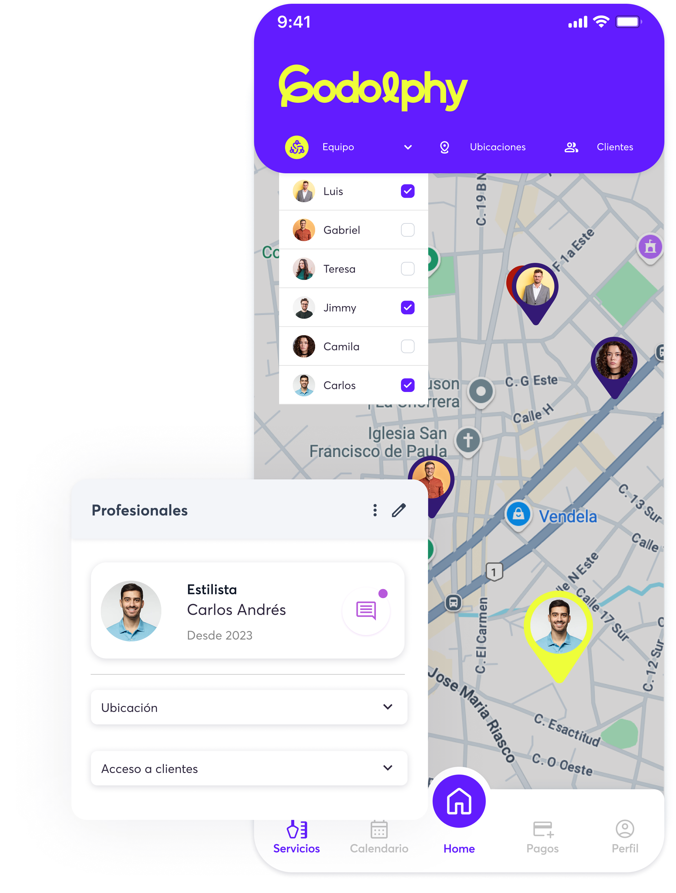

Configura cada local o sede de tu negocio como una ubicación independiente dentro de Godolphy. Define el nombre, dirección y características propias de cada centro, y gestiónalos todos desde un único panel de administración.
Los clientes podrán seleccionar entre las distintas ubicaciones o los servicios a domicilio en el momento de la reserva. De este modo, el usuario solo verá los servicios y profesionales disponibles en esa modalidad, evitando confusiones y garantizando que cada reserva esté correctamente asignada.

Cambia entre ubicaciones para ver horarios y citas en toda la empresa en cuestión de segundos. Desde los filtros de la agenda puedes seleccionar qué ubicación deseas ver y añadir otros filtros como profesionales, clientes o servicios.

Filtra tu lista de personal por ubicación o visualiza todo el equipo de una vez. Asigna a los miembros del personal las ubicaciones donde trabajan directamente desde su perfil. Gestiona el acceso a las conversaciones con clientes según las ubicaciones en las que trabaje cada miembro del personal.

Cada ubicación puede tener su propio catálogo de servicios y estructura de precios. Define servicios exclusivos para determinados centros, aplica tarifas distintas según la zona y adapta la oferta a la demanda de cada local, todo desde un único panel de administración.
Sin tarjeta de crédito. Sin permanencia. 30 días para probar todo el potencial de Godolphy.
30 días gratis · Sin tarjeta de crédito
Si tienes más de un centro de estética o peluquería, sabes lo complejo que es coordinar equipos, agendas y facturación de varios locales a la vez. El módulo de múltiples ubicaciones para cadenas de salones de Godolphy lo simplifica todo.
Desde un único panel de administración tienes visión consolidada de todas tus ubicaciones: agenda global, equipo, ingresos y rendimiento por centro. La gestión de franquicias de belleza nunca había sido tan sencilla.
Cada centro mantiene su configuración independiente: equipo propio, horarios distintos, servicios y precios adaptados a cada ubicación. Un cliente de un centro puede reservar en otro de la cadena sin perder su historial.
Los reportes consolidados te permiten comparar el rendimiento de cada centro mes a mes: cuál genera más ingresos, cuál tiene más no-shows y qué profesional destaca en cada ubicación.
Plan Pro: hasta 2 ubicaciones. Plan Max: ilimitadas. Prueba gratis 30 días.
Sí. Desde un único panel tienes vista consolidada de agenda, equipo y facturación de todos tus centros.
En el plan Pro hasta 2 ubicaciones, en el plan Max ilimitadas.
Sí. Cada ubicación tiene su configuración independiente de equipo, horarios y servicios.
Cuando tu negocio crece y abres un segundo o tercer centro, la complejidad de la gestión se multiplica. Godolphy está pensado para cadenas de salones, franquicias y grupos de centros de estética que necesitan tener todo bajo control sin perder agilidad. Desde un único panel puedes ver la actividad de todos tus centros, gestionar reservas, consultar ingresos y supervisar el rendimiento de cada ubicación de forma independiente o consolidada, con la misma comodidad que si gestionaras un solo salón.
La gestión de equipo y horarios se adapta a la estructura de cada centro: cada ubicación puede tener sus propios profesionales, sus tarifas y su configuración de servicios, manteniendo una identidad operativa propia dentro de la misma cuenta. También puedes permitir que ciertos clientes reserven en cualquiera de tus centros y que su historial y ficha se compartan entre ubicaciones, ofreciendo una experiencia coherente independientemente de dónde se atienda.
Para cadenas que buscan escalar, Godolphy ofrece funciones de reporte comparativo entre centros, campañas de fidelización a nivel de grupo y configuración centralizada de productos y servicios que se despliega en todas las ubicaciones con un solo clic. Si quieres conocer las condiciones específicas para gestionar varios centros, consulta la página de ver precios para múltiples ubicaciones y descubre el plan que mejor se adapta a tu estructura.